| Sample_1880 | Sample_1881 | Sample_1882 | Sample_1883 | Sample_1884 | |
|---|---|---|---|---|---|
| Prevotella_copri | 0.03 | 3.80 | 0.00 | 26.83 | 30.02 |
| Faecalibacterium_prausnitzii | 38.39 | 5.00 | 7.79 | 2.02 | 15.27 |
| Bacteroides_stercoris | 0.00 | 0.00 | 1.19 | 2.31 | 0.01 |
| Subdoligranulum_unclassified | 3.10 | 9.31 | 11.51 | 4.03 | 1.83 |
| Bacteroides_vulgatus | 0.23 | 2.38 | 0.65 | 0.42 | 0.22 |
A robust pipeline for statistical metagenomic data analysis
MISO Master Project | Metagenomics
Ines BAKLI, Alden SNEATH, Paul LEMONNIER
Introduction
Metagenomic Challenge
Goal: Building a reproducible pipeline ➔ reliable conclusions on microbial interaction from metagenomic data.
Data : Bacteria population abundance from patients’ gut microbiome with differing diseases
Problems from microbiome sequencing :
- High dimensionnality
- Sparsity
- Compositionality
Dataset Structure
All analyses were performed using the phyloseq framework, integrating three essential matrices into a single metagenomics object:
Counts/proportions of each taxon across samples.
Clinical context and patient variables used for group comparisons
| age | gender | disease | country | |
|---|---|---|---|---|
| Sample_1880 | 34 | female | ibd_ulcerative_colitis | spain |
| Sample_2485 | 45 | female | cirrhosis | china |
| Sample_3063 | 53 | female | t2d | china |
| Sample_3480 | 67 | male | cancer | france |
Biological identification for each OTU.
| Kingdom | Phylum | Class | Order | Family | |
|---|---|---|---|---|---|
| Actinomyces_graevenitzii | Bacteria | Actinobacteria | Actinobacteria | Actinomycetales | Actinomycetaceae |
| Bacteroides_barnesiae | Bacteria | Bacteroidetes | Bacteroidia | Bacteroidales | Bacteroidaceae |
| Granulicatella_unclassified | Bacteria | Firmicutes | Bacilli | Lactobacillales | Carnobacteriaceae |
| Fusobacterium_gonidiaformans | Bacteria | Fusobacteria | Fusobacteriia | Fusobacteriales | Fusobacteriaceae |
| Burkholderiales_bacterium_1_1_47 | Bacteria | Proteobacteria | Betaproteobacteria | Burkholderiales | Burkholderiales_noname |
Data preparation
1. Quality control
- Missing values : avoid analysis bias
- Distribution of sequencing depth = nb of reads/sample
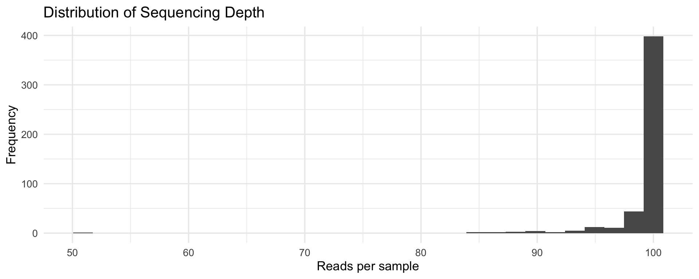
Allows the identifaction of outliers + normalisation
2. Data Overview
Sample distribution
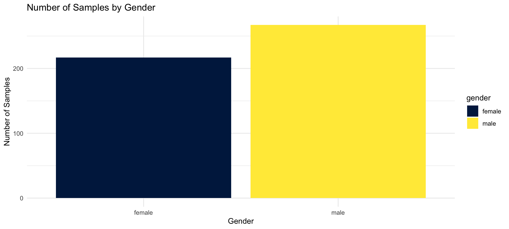
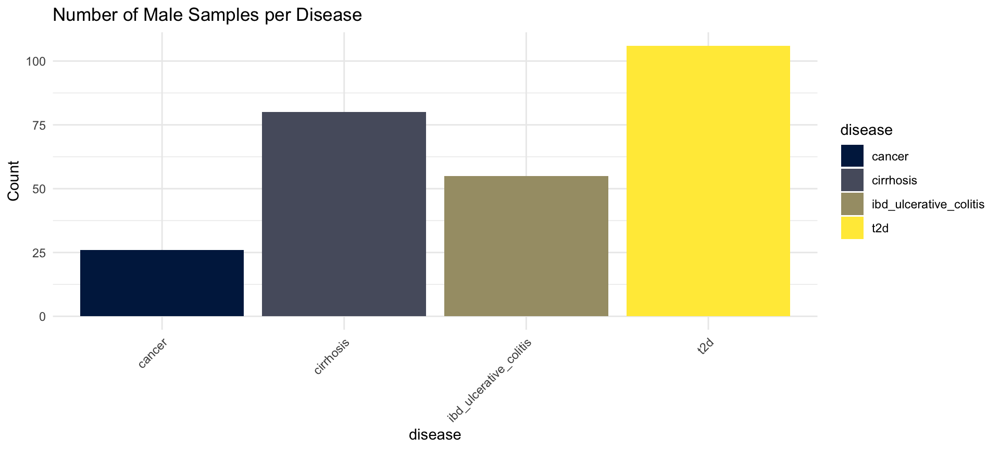
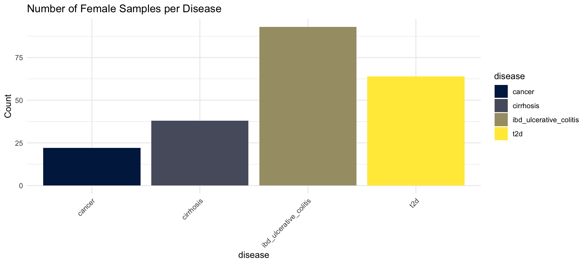
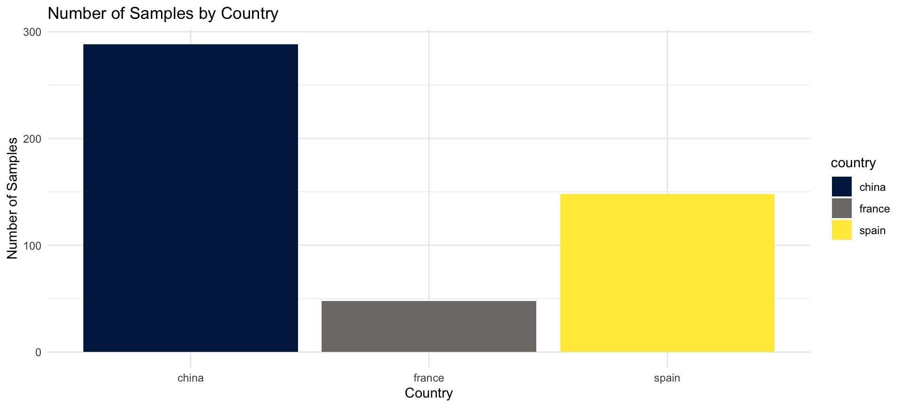
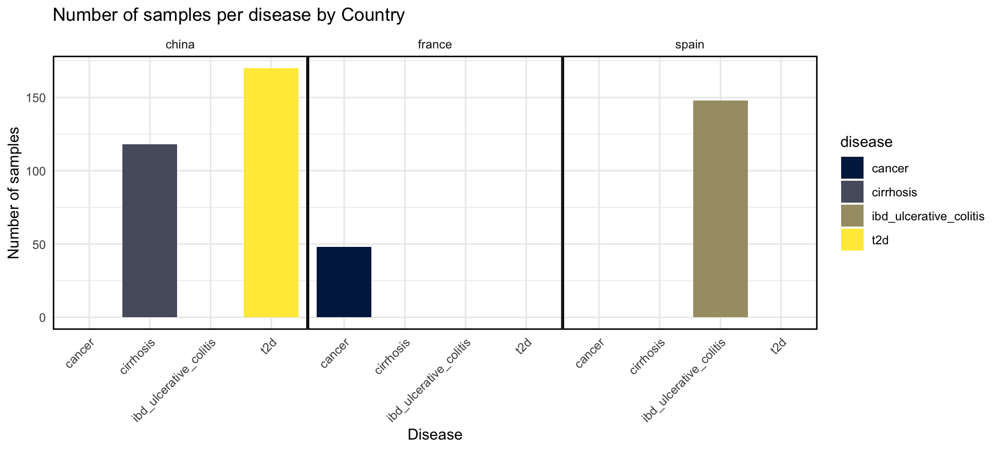
2. Data Overview
Taxonomic composition

➔ Roughly same microbial compositions, differing proportions, also depending on the nb of samples
Diversity analysis
1. Alpha diversity
Alpha diversity measures the diversity within a single sample. It can reflect both:
- Richness: the number of taxa present
- Evenness: the distribution of abundances among taxa
Several metrics can be used, we chose 4: Observed, Shannon, Simpson and Inverted Simpson
Overview of the Alpha diversity
Unique OTUs present per diseases
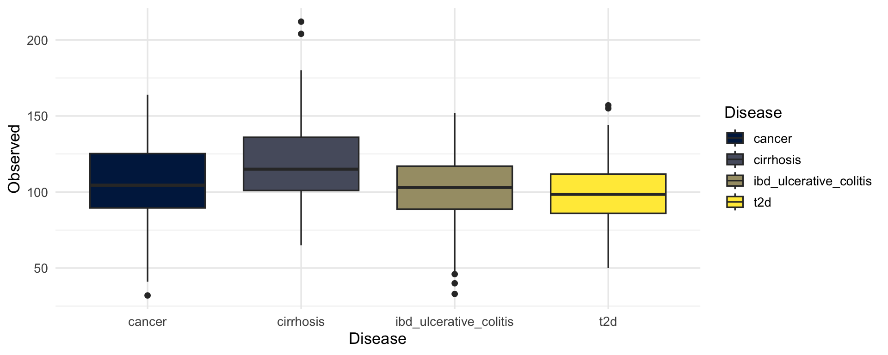
Measure the richness and evenness of species in a community

Probability : two random individuals from a community belong to the different species
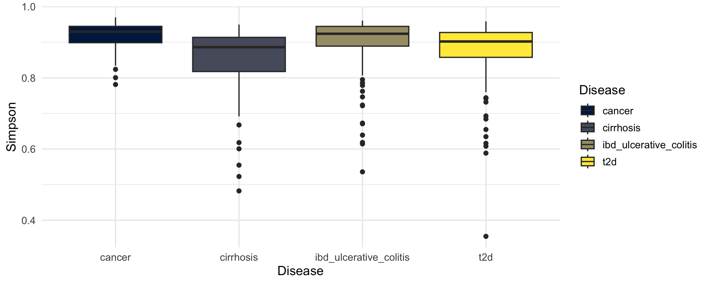
Variation of the Simpson = microbial interpretation of diversity in terms of equivalent species numbers
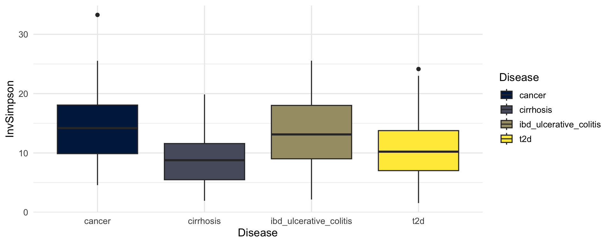
Statistical analysis
Assess the normality = Shapiro test
| Metric | method | statistic | p.value |
|---|---|---|---|
| Observed | Shapiro-Wilk normality test | 0.9867 | 2e-04 |
| Shannon | Shapiro-Wilk normality test | 0.9491 | 0e+00 |
| Simpson | Shapiro-Wilk normality test | 0.7580 | 0e+00 |
| InvSimpson | Shapiro-Wilk normality test | 0.9773 | 0e+00 |
➔ p-value < 0.05 = reject the normality ➔ Non parametric test
Assess the significant differences in microbial diversity across disease groups = Kruskal-Wallis test
| Metric | method | parameter | statistic | p.value |
|---|---|---|---|---|
| Observed | Kruskal-Wallis rank sum test | 3 | 48.6511 | 0 |
| Shannon | Kruskal-Wallis rank sum test | 3 | 65.3548 | 0 |
| Simpson | Kruskal-Wallis rank sum test | 3 | 57.5800 | 0 |
| InvSimpson | Kruskal-Wallis rank sum test | 3 | 57.5800 | 0 |
➔ p-value < 0.05 = difference somewhere among the groups
KW = difference somewhere among the groups ➔ post-hoc pairwise comparisons to see which groups differ
| Group A | Group B | P-value (BH) | Metric |
|---|---|---|---|
| ibd_ulcerative_colitis | cancer | 0.8046 | Simpson |
| ibd_ulcerative_colitis | cancer | 0.8046 | InvSimpson |
| ibd_ulcerative_colitis | cancer | 0.6894 | Shannon |
| ibd_ulcerative_colitis | cancer | 0.2792 | Observed |
| t2d | ibd_ulcerative_colitis | 0.1583 | Observed |
| t2d | cancer | 0.0742 | Observed |
| t2d | cirrhosis | 0.0455 | Shannon |
| cirrhosis | cancer | 0.0190 | Observed |
| t2d | cirrhosis | 0.0107 | Simpson |
| t2d | cirrhosis | 0.0107 | InvSimpson |
| t2d | cancer | 0.0004 | Simpson |
| t2d | cancer | 0.0004 | InvSimpson |
| t2d | cancer | 0.0000 | Shannon |
| t2d | ibd_ulcerative_colitis | 0.0000 | Simpson |
| t2d | ibd_ulcerative_colitis | 0.0000 | InvSimpson |
| cirrhosis | cancer | 0.0000 | Simpson |
| cirrhosis | cancer | 0.0000 | InvSimpson |
| ibd_ulcerative_colitis | cirrhosis | 0.0000 | Observed |
| t2d | ibd_ulcerative_colitis | 0.0000 | Shannon |
| cirrhosis | cancer | 0.0000 | Shannon |
| ibd_ulcerative_colitis | cirrhosis | 0.0000 | Simpson |
| ibd_ulcerative_colitis | cirrhosis | 0.0000 | InvSimpson |
| ibd_ulcerative_colitis | cirrhosis | 0.0000 | Shannon |
| t2d | cirrhosis | 0.0000 | Observed |
- p-value < 0.05 = significative difference in diversity beetween the 2 communities
- p-value > 0.05 = no significative difference
2. Beta diversity
Beta diversity measures differences in microbial composition between samples.
We used 2 metrics :
Bray-Curtis : Considers both the microbial communitites presence/absence and relative abundance beetween samples
Jaccard : Considers only presence/absence.
To visualise those dispersions, we used PCoA
2. Beta diversity
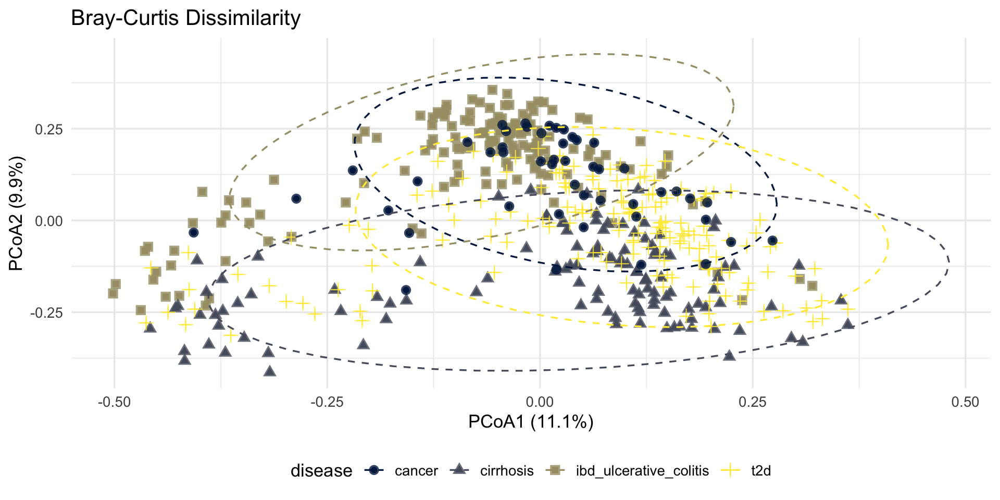
Statistical Analysis
Needed to verify the homogeneity of multivariate dispersions
| Distance Metric | F-value | P-value (999 perms) |
|---|---|---|
| Bray-Curtis | 18.158 | 0.001 |
| Jaccard | 18.513 | 0.001 |
➔ p-value < 0.05 = heterogeneity in the groups multivariate dispersion
| Comparison | Observed diff. | p-value | Distance |
|---|---|---|---|
| cancer-cirrhosis | 0.1871 | 0.199 | Bray-Curtis |
| cancer-ibd_ulcerative_colitis | 0.0136 | 0.012 | Bray-Curtis |
| cancer-t2d | 0.0309 | 0.026 | Bray-Curtis |
| cirrhosis-ibd_ulcerative_colitis | 0.0000 | 0.001 | Bray-Curtis |
| cirrhosis-t2d | 0.3025 | 0.303 | Bray-Curtis |
| ibd_ulcerative_colitis-t2d | 0.0000 | 0.001 | Bray-Curtis |
| cancer-cirrhosis | 0.2200 | 0.214 | Jaccard |
| cancer-ibd_ulcerative_colitis | 0.0148 | 0.014 | Jaccard |
| cancer-t2d | 0.0214 | 0.023 | Jaccard |
| cirrhosis-ibd_ulcerative_colitis | 0.0000 | 0.001 | Jaccard |
| cirrhosis-t2d | 0.1970 | 0.189 | Jaccard |
| ibd_ulcerative_colitis-t2d | 0.0000 | 0.001 | Jaccard |
➔ Pairwise comparisons revealed that the IBD group had significantly different multivariate dispersion compared to all other diseases (p < 0.05 for all comparisons)
Asses whether the centroids of the groups (disease status) are significantly different
| Distance Metric | Variation Explained (R² %) | F-value | P-value |
|---|---|---|---|
| Bray-Curtis | 8.69 | 15.235 | 0.001 |
| Jaccard | 5.55 | 9.408 | 0.001 |
➔ p-value < 0.05 = Significant differences in community structure
➔ R2 Bray-Curtis > R2 Jaccard = abundance differences are more discriminative than just presence/absence
| Comparison | R² | F-value | p-value | Distance |
|---|---|---|---|---|
| ibd_ulcerative_colitis_vs_cirrhosis | 0.1019 | 29.95 | 0.001 | Bray-Curtis |
| ibd_ulcerative_colitis_vs_t2d | 0.0631 | 21.27 | 0.001 | Bray-Curtis |
| ibd_ulcerative_colitis_vs_cancer | 0.0262 | 5.22 | 0.001 | Bray-Curtis |
| cirrhosis_vs_t2d | 0.0371 | 11.01 | 0.001 | Bray-Curtis |
| cirrhosis_vs_cancer | 0.0704 | 12.43 | 0.001 | Bray-Curtis |
| t2d_vs_cancer | 0.0286 | 6.35 | 0.001 | Bray-Curtis |
| ibd_ulcerative_colitis_vs_cirrhosis | 0.0626 | 17.63 | 0.001 | Jaccard |
| ibd_ulcerative_colitis_vs_t2d | 0.0401 | 13.22 | 0.001 | Jaccard |
| ibd_ulcerative_colitis_vs_cancer | 0.0180 | 3.55 | 0.001 | Jaccard |
| cirrhosis_vs_t2d | 0.0234 | 6.86 | 0.001 | Jaccard |
| cirrhosis_vs_cancer | 0.0444 | 7.62 | 0.001 | Jaccard |
| t2d_vs_cancer | 0.0192 | 4.22 | 0.001 | Jaccard |
Pairwise PERMANOVA revealed that all disease groups were significantly different from each other.
Metagenomic networks analysis
How microbial populations reorganize, compete, or cooperate depending on the host’s disease.
We used a consensus network approach :
SpiecEasi (MB): Meinshausen-Bühlmann Neighborhood Selection = Node to node interactions
SpiecEasi (Glasso): Graphical Lasso = Global estimation
SparCC: Sparse Correlations for Compositional Data = global correlations
An interaction is validated if confirmed by 2 of 3 methods
We tested 3 taxonomic levels : Phylum, Family and Genus
1. Phylum Level
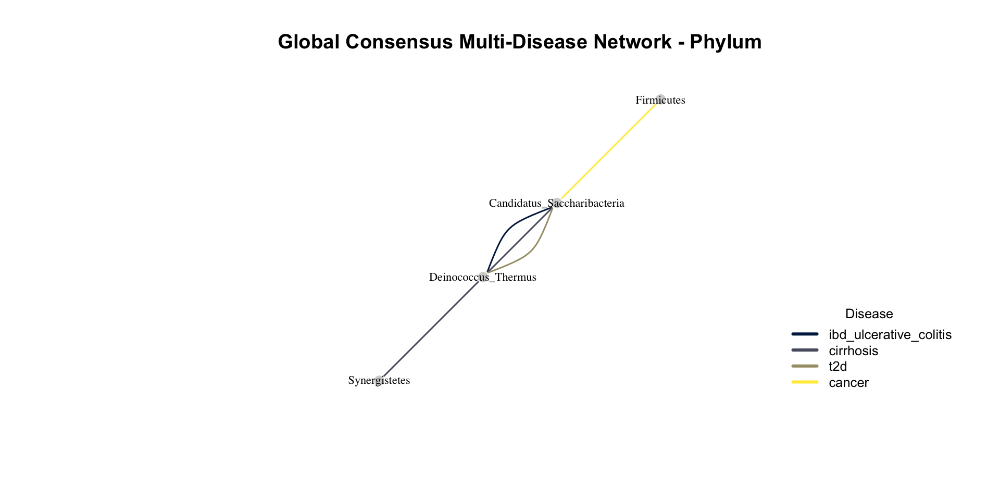
| Tax_Level | Disease_Cohort | Nodes_Count | Edges_Count | Graph_Density | Average_Degree |
|---|---|---|---|---|---|
| Phylum | ibd_ulcerative_colitis | 8 | 1 | 0.036 | 0.25 |
| Phylum | cirrhosis | 9 | 2 | 0.056 | 0.44 |
| Phylum | t2d | 9 | 1 | 0.028 | 0.22 |
| Phylum | cancer | 7 | 1 | 0.048 | 0.29 |
- Low edge count (interactions)
- Very low density
➔ grouping of populations, lack of resolution
2. Family Level
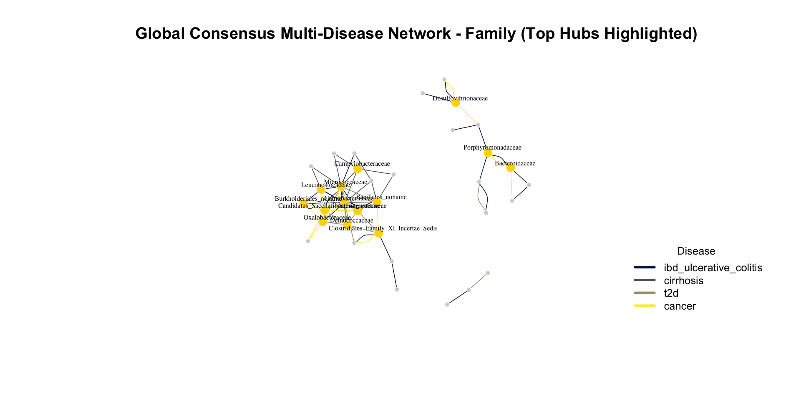
| Tax_Level | Disease_Cohort | Nodes_Count | Edges_Count | Graph_Density | Average_Degree |
|---|---|---|---|---|---|
| Family | ibd_ulcerative_colitis | 34 | 24 | 0.043 | 1.41 |
| Family | cirrhosis | 37 | 14 | 0.021 | 0.76 |
| Family | t2d | 36 | 16 | 0.025 | 0.89 |
| Family | cancer | 37 | 16 | 0.024 | 0.86 |
- Increase in nodes and edges
- Optimal graph density
➔ Network architecture = specific to each diseases
3. Genus Level
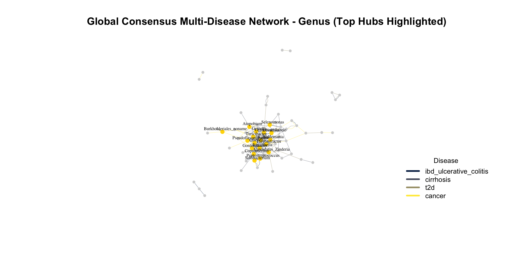
| Tax_Level | Disease_Cohort | Nodes_Count | Edges_Count | Graph_Density | Average_Degree |
|---|---|---|---|---|---|
| Genus | ibd_ulcerative_colitis | 64 | 46 | 0.023 | 1.44 |
| Genus | cirrhosis | 70 | 30 | 0.012 | 0.86 |
| Genus | t2d | 64 | 33 | 0.016 | 1.03 |
| Genus | cancer | 73 | 29 | 0.011 | 0.79 |
- Too much nodes and edges
- Decreasing density
➔ Topological collapse = a lot of fragmentation
Conclusion: A Robust Bioinformatics Pipeline
- End-to-End Reproducibility: Seamless integration of metadata, taxonomy, and OTU counts within the
phyloseqframework. - Statistical Rigor: Addressed inherent metagenomic biases (sparsity, zero-inflation, compositionality) via Centered Log-Ratio (CLR) transformations and non-parametric testing.
- Consensus Network Inference: Mitigated algorithmic artifacts and false positives by enforcing a strict majority vote across three distinct methodologies (SPIEC-EASI MB, SPIEC-EASI Glasso, and SparCC).
- Scalable Architecture: Delivered a fully automated, version-controlled analytical environment using R,
igraph, and Quarto.